CONHEÇA OS PRINCIPAIS SENSORES
Os sensores são componentes essenciais em projetos de automação, IoT e prototipagem eletrônica. Cada tipo possui características específicas de sinal, comunicação e aplicação, sendo fundamental conhecer suas particularidades para escolher o modelo mais adequado para cada projeto.
A seguir, apresentamos um catálogo com os sensores mais utilizados, organizados por categoria de grandeza medida.
Sensores de Temperatura
Aplicações: Climatização, monitoramento de máquinas, processos industriais, estações meteorológicas e IoT.
Sensores de Umidade
Sensores como o DHT11 e DHT22 também medem umidade relativa do ar, sendo amplamente utilizados em estações meteorológicas, automação residencial e projetos IoT que necessitam de monitoramento ambiental.
Aplicações: Estufas agrícolas, climatização, monitoramento de museus e arquivos, sistemas de irrigação inteligente.
Sensores Ultrassônicos
Utilizam ondas sonoras de alta frequência para medir distâncias. O princípio de funcionamento é: emitir onda → atingir objeto → receber eco → calcular distância.
O módulo HC-SR04 é o mais popular, com pinos Trigger e Echo, muito utilizado em robótica, medição de nível e detecção de obstáculos.
Aplicações: Medição de distância, robótica, detecção de obstáculos, nível de tanques, estacionamento assistido.
LDR (Light Dependent Resistor)
Resistor cuja resistência varia com a intensidade luminosa. Utilizado em circuitos de leitura analógica para detectar níveis de luz ambiente.
Aplicações: Iluminação automática, monitoramento de luminosidade, automação residencial, projetos IoT.
Sensor PIR (Passive Infrared)
Detecta movimento pela variação da radiação infravermelha no ambiente. Módulos comuns oferecem saída digital, facilitando a integração com microcontroladores.
Aplicações: Iluminação automática, sistemas de segurança, automação residencial, monitoramento de presença.
Sensores de Gás
Detectam a presença ou concentração de gases no ambiente. Os modelos mais comuns incluem:
- MQ-2 – Detecta gases inflamáveis e fumaça
- MQ-135 – Monitora qualidade do ar (CO2, amônia, benzeno)
- MQ-7 – Sensor específico para monóxido de carbono (CO)
Importante: sensores educacionais não substituem instrumentos industriais certificados para segurança.
BMP280
Sensor digital de pressão atmosférica e temperatura, com comunicação I²C ou SPI. Ideal para projetos que exigem medição precisa de altitude e condições climáticas.
Aplicações: Estações meteorológicas, altimetria, IoT, monitoramento ambiental, drones.
MPU6050
Módulo que combina acelerômetro e giroscópio em um único chip, com comunicação I²C. Permite medir aceleração linear e rotação em três eixos.
Aplicações: Robótica, controle de movimento, orientação, detecção de inclinação, estabilização de drones.
ACS712
Sensor de corrente baseado em efeito Hall, com saída analógica proporcional à corrente medida. Disponível em versões para diferentes faixas de corrente (5A, 20A, 30A).
Aplicações: Monitoramento elétrico, automação, sistemas embarcados, análise de consumo energético.
Sensores Industriais
Manutenção Preditiva: Sensores de vibração, temperatura, corrente e pressão monitoram máquinas para identificar anormalidades antes da falha.
Controle de Processos
Em um processo industrial típico temos: Entrada → Processo → Saída. Os sensores medem a saída ou o estado do processo, e o controlador compara com o valor desejado, realizando os ajustes necessários.
Exemplo prático: Temperatura desejada 80 °C, sensor mede 72 °C → controlador aumenta o aquecimento até atingir o valor de referência.
A tríade fundamental da automação é: Sensor → Controlador → Atuador.
APLICAÇÕES DOS SENSORES POR SETOR
GALERIA DE SENSORES
Confira alguns exemplos visuais dos sensores mais utilizados
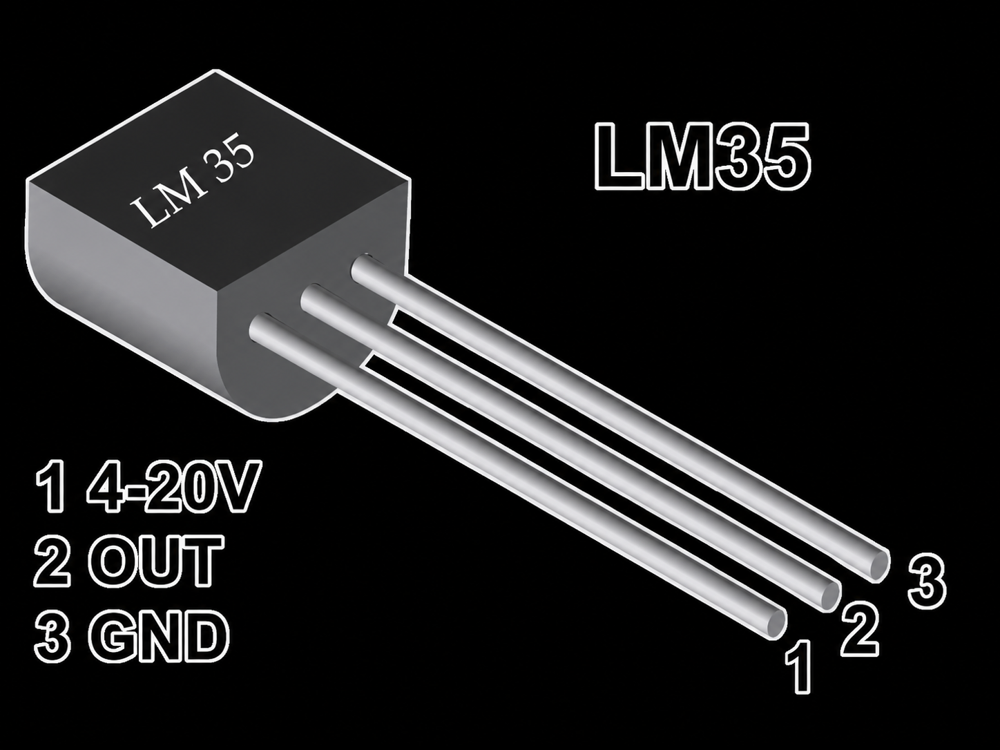
LM35
Sensor analógico de temperatura
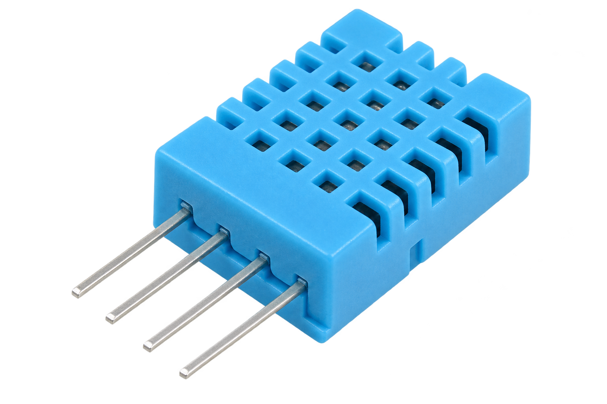
DHT11
Temp. e umidade básico
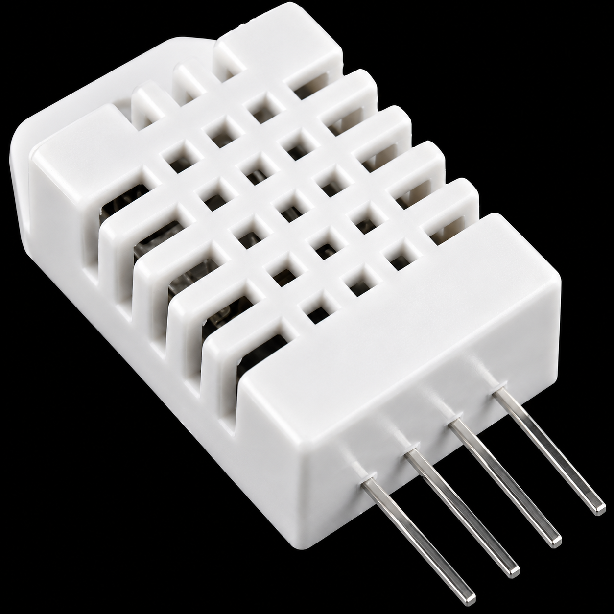
DHT22
Temp. e umidade preciso
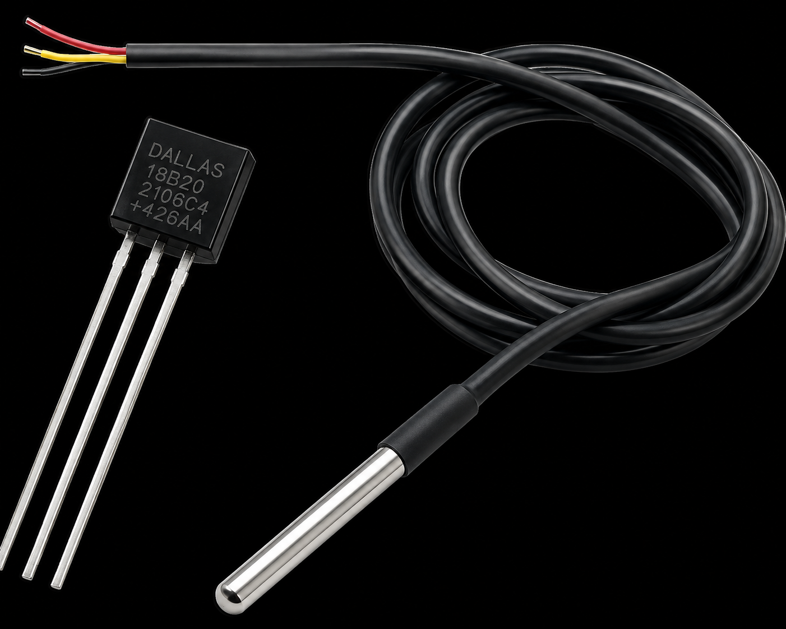
DS18B20
Digital 1-Wire
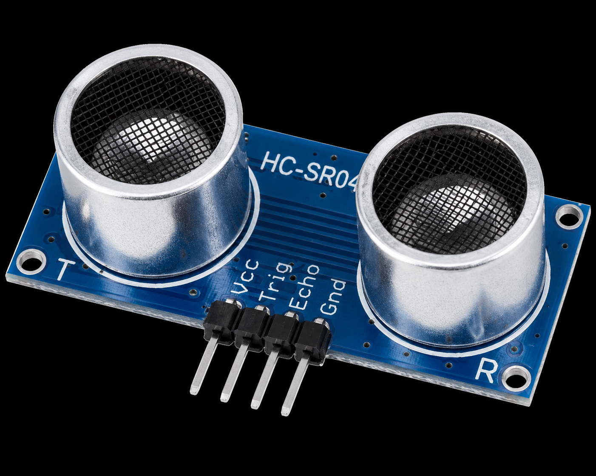
HC-SR04
Ultrassônico de distância
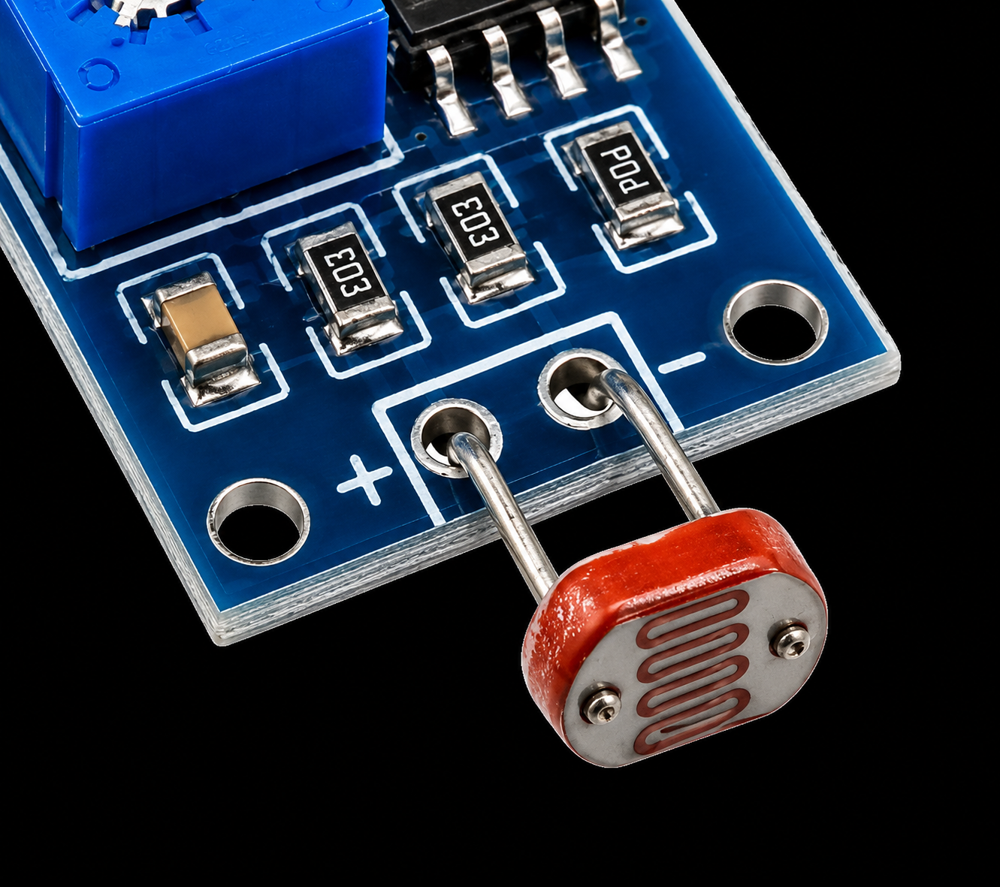
LDR
Fotorresistor
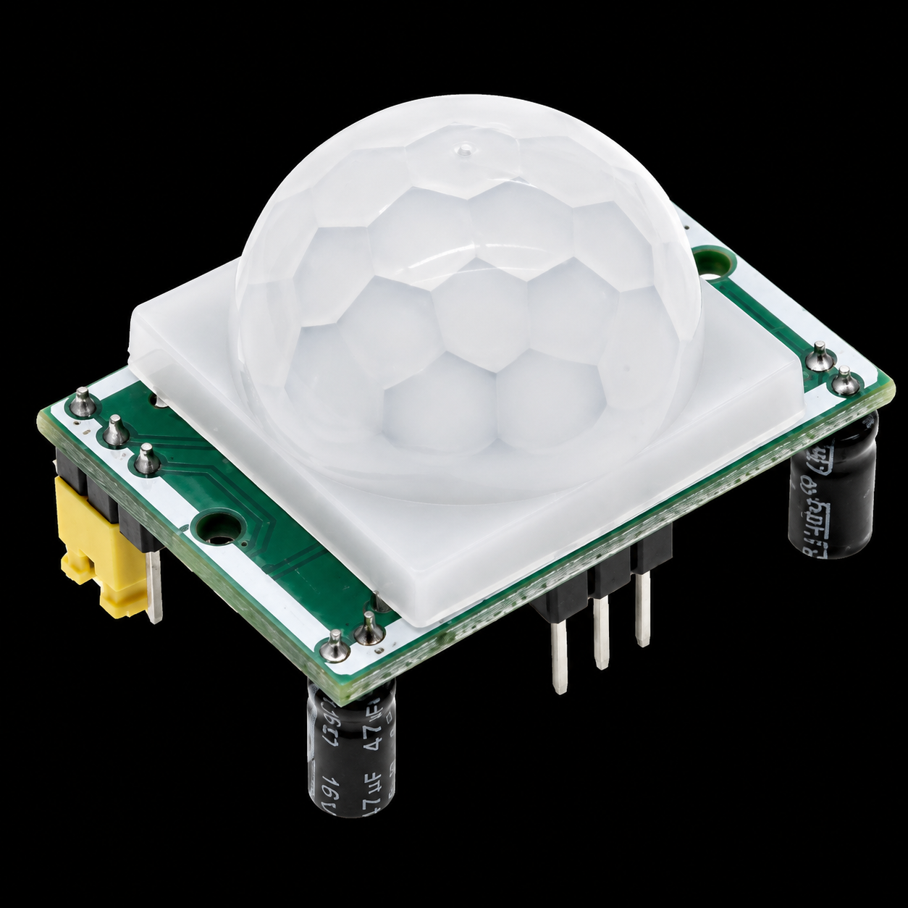
PIR
Movimento infravermelho
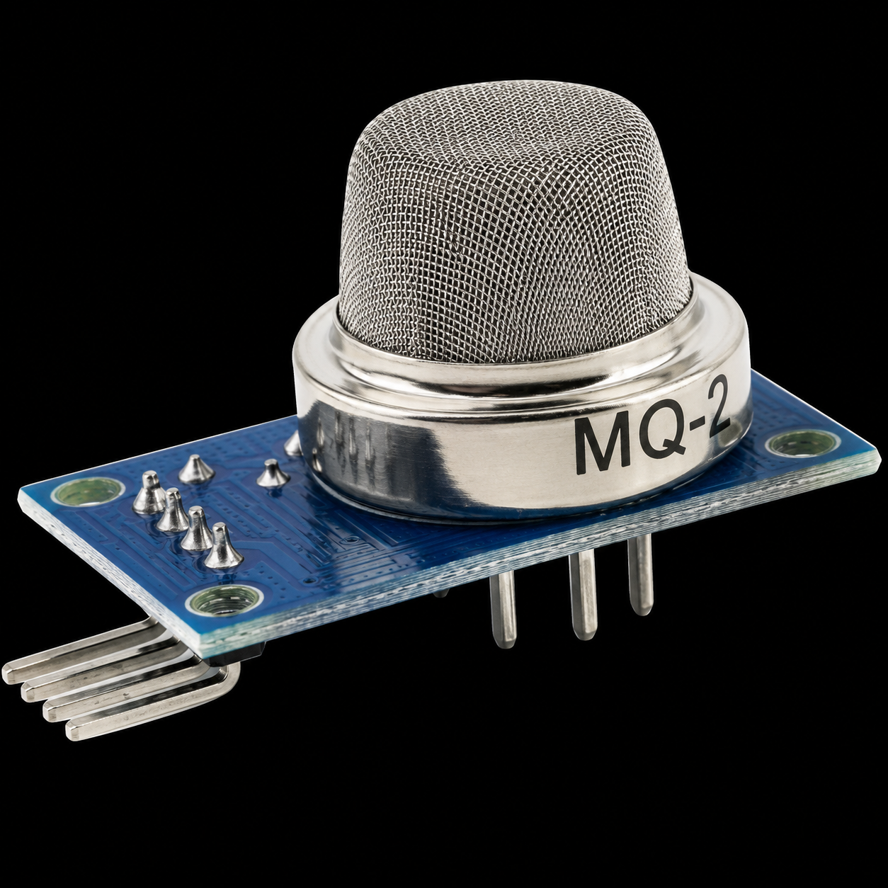
MQ-2
Gases inflamáveis
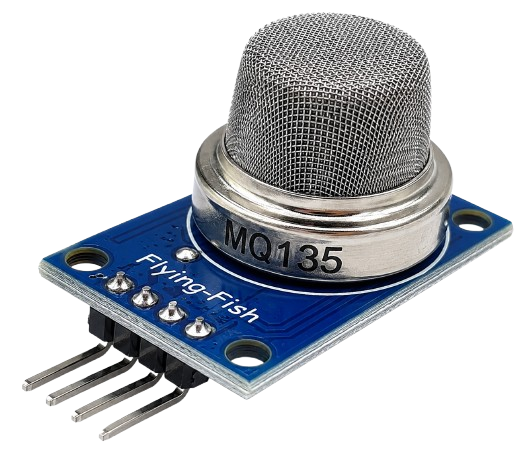
MQ-135
Qualidade do ar
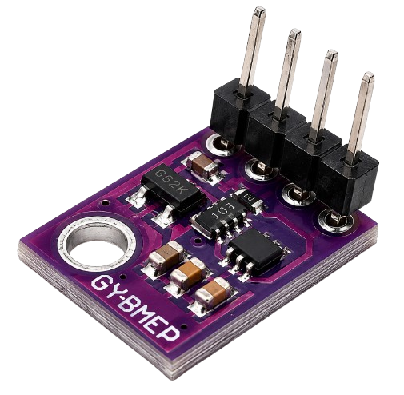
BMP280
Pressão e temperatura
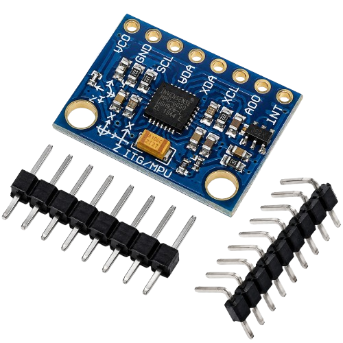
MPU6050
Acelerômetro + giroscópio
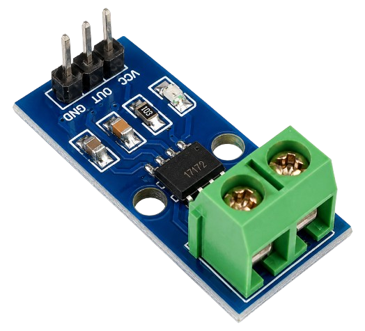
ACS712
Sensor de corrente Hall
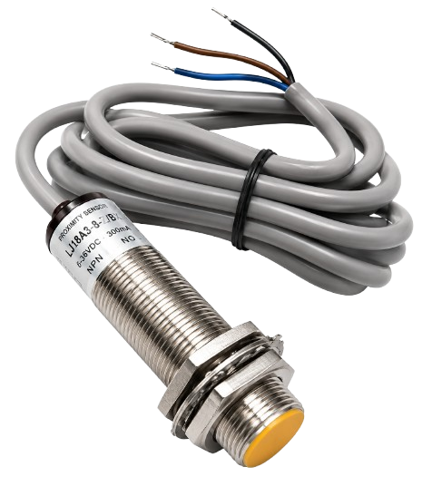
Indutivo
Detecção de metais
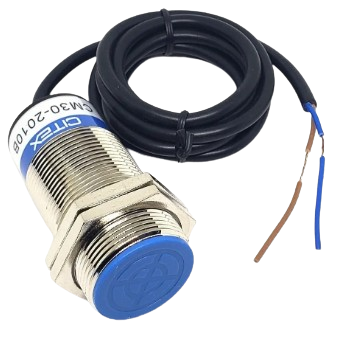
Capacitivo
Detecção de materiais
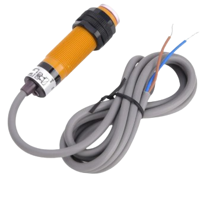
Fotoelétrico
Detecção por feixe de luz
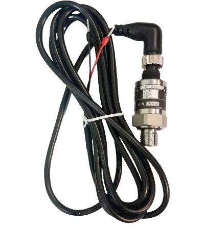
Pressão Industrial
Transmissor de pressão
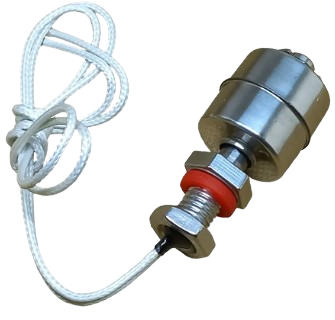
Nível
Monitoramento de tanques
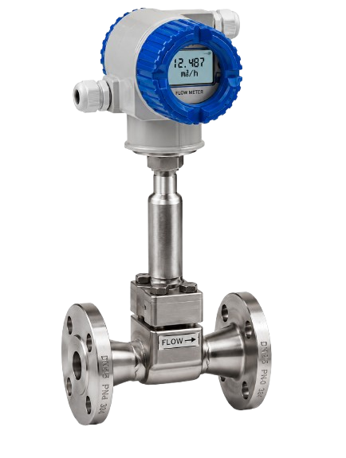
Vazão
Medição de fluxo
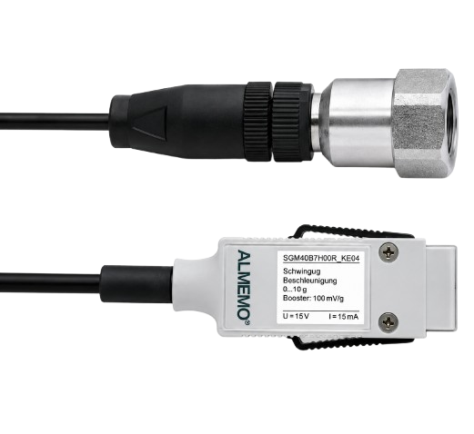
Vibração
Monitoramento de motores
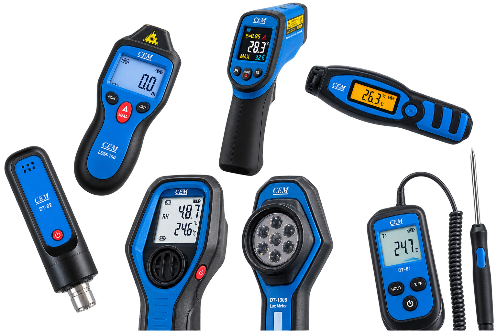
Manutenção Preditiva
Saúde da máquina